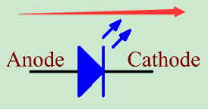
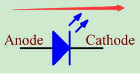
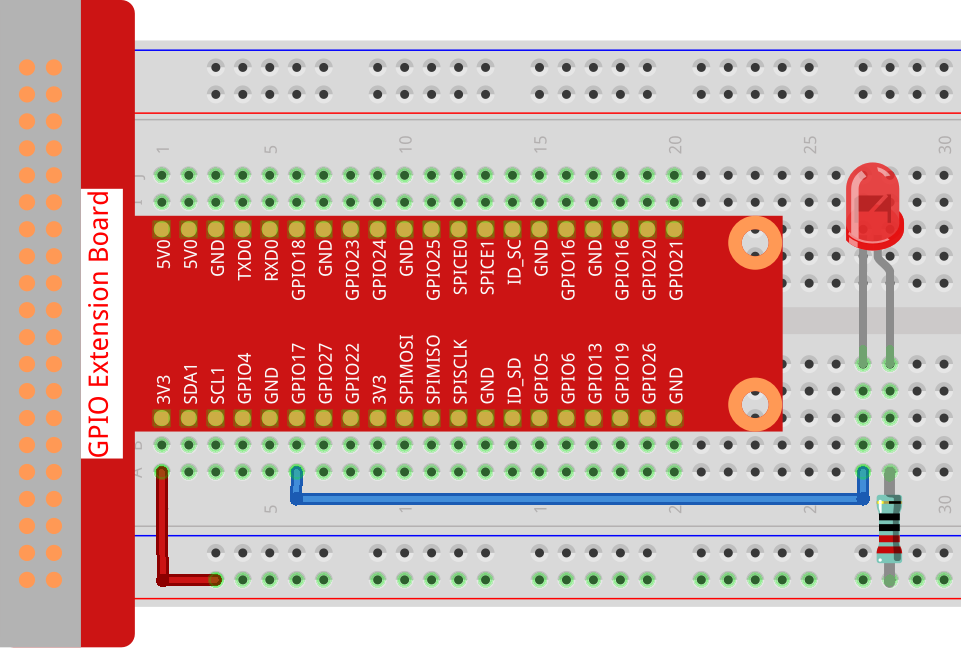
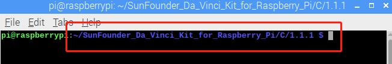

1.1.1 Blinking LED¶
Introduction¶
In this lesson, we will learn how to make a blinking LED by programming. Through your settings, your LED can produce a series of interesting phenomena. Now, go for it.
Components¶

Note
In order to proceed smoothly, you need to bring your own Raspberry Pi, TF card and Raspberry Pi power.
Principle¶
Breadboard
A breadboard is a construction base for prototyping of electronics. It is used to build and test circuits quickly before finishing any circuit design. And it has many holes into which components mentioned above can be inserted like ICs and resistors as well as jumper wires. The breadboard allows you to plug in and remove components easily.
The picture shows the internal structure of a full+ breadboard. Although these holes on the breadboard appear to be independent of each other, they are actually connected to each other through metal strips internally.

LED
LED is a kind of diode. LED will shine only if the long pin of LED is connected to the positive electrode and the short pin is connected to negative electrode.
 

The LED can not be directly connected to power supply, which can damage component. A resistor with 160Ω or larger (work in 5V) must be connected in series in the circuit of LED.
Resistor
Resistor is an electronic element that can limit the branch current. A fixed resistor is a kind of resistor whose resistance cannot be changed, while that of a potentiometer or a variable resistor can be adjusted.
Fixed resistor is applied in this kit. In the circuit, it is essential to protect the connected components. The following pictures show a real object, 220Ω resistor and two generally used circuit symbols of resistor. Ω is the unit of resistance and the larger units include KΩ, MΩ, etc. Their relationship can be shown as follows: 1 MΩ=1000 KΩ, 1 KΩ = 1000 Ω. Normally, the value of resistance is marked on it. So if you see these symbols in a circuit, it means that there is a resistor.


When using a resistor, we need to know its resistance first. Here are two methods: you can observe the bands on the resistor, or use a multimeter to measure the resistance. You are recommended to use the first method as it is more convenient and faster. To measure the value, use multimeter.
As shown in the card, each color stands for a number.

Schematic Diagram¶
In this experiment, connect a 220Ω resistor to the anode (the long pin of the LED), then the resistor to 3.3 V, and connect the cathode (the short pin) of the LED to GPIO17 of Raspberry Pi. Therefore, to turn on an LED, we need to make GPIO17 low (0V) level. We can get this phenomenon by programming.
Note
Pin11 refers to the 11th pin of the Raspberry Pi from left to right, and its corresponding wiringPi and BCM pin numbers are shown in the following table.
In the C language related content, we make GPIO0 equivalent to 0 in the wiringPi. Among the Python language related content, BCM 17 is 17 in the BCM column of the following table. At the same time, they are the same as the 11th pin on the Raspberry Pi, Pin 11.
T-Board Name |
physical |
wiringPi |
BCM |
GPIO17 |
Pin 11 |
0 |
17 |
{kind=link}
Experimental Procedures¶
Step 1: Build the circuit.
{kind=link}
For C Language Users¶
Step 2: Go to the folder of the code.
If you use a screen, you’re recommended to take the following steps.
Go to /home/pi/ and find the folder davinci-kit-for-raspberry-pi.
Find C in the folder, right-click on it and select Open in Terminal.

Then a window will pop up as shown below. So now you’ve entered the path of the code 1.1.1_BlinkingLed.c .
{kind=link}
In the following lessons, we will use command to enter the code file instead of right-clicking. But you can choose the method you prefer.
If you log into the Raspberry Pi remotely, use
cdto change directory:
cd /home/pi/davinci-kit-for-raspberry-pi/c/1.1.1/
Note
Change directory to the path of the code in this experiment via cd.
In either way, now you are in the folder C. The subsequent procedures based on these two methods are the same. Let’s move on.
Step 3: Compile the code
gcc 1.1.1_BlinkingLed.c -o BlinkingLed -lwiringPi
Note
gcc is GNU Compiler Collection. Here, it functions like compiling the C language file 1_BlinkingLed.c and outputting an executable file.
In the command, -o means outputting (the character immediately
following -o is the filename output after compilation, and an executable
named BlinkingLed will generate here) and -lwiringPi is to load
the library wiringPi (l is the abbreviation of library).
Step 4: Run the executable file output in the previous step.
sudo ./BlinkingLed
To control the GPIO, you need to run the program, by the
command, sudo(superuser do). The command ./ indicates the current
directory. The whole command is to run the BlinkingLed in the
current directory.
{kind=link}
After the code runs, you will see the LED flashing.
If you want to edit the code file 1.1.1_BlinkingLed.c, press Ctrl +
C to stop running the code. Then type the following command to open
it:
nano 1.1.1_BlinkingLed.c
Note
nano is a text editor tool. The command is used to open the
code file 1.1.1_BlinkingLed.c by this tool.
Press Ctrl+X to exit. If you have modified the code, there will be a
prompt asking whether to save the changes or not. Type in Y (save)
or N (don’t save). Then press Enter to exit. Repeat Step 3
and Step 4 to see the effect after modifying.

Code
The program code is shown as follows:
#include <wiringPi.h>
#include <stdio.h>
#define LedPin 0
int main(void)
{
// When initialize wiring failed, print message to screen
if(wiringPiSetup() == -1){
printf("setup wiringPi failed !");
return 1;
}
pinMode(LedPin, OUTPUT);// Set LedPin as output to write value to it.
while(1){
// LED on
digitalWrite(LedPin, LOW);
printf("...LED on\n");
delay(500);
// LED off
digitalWrite(LedPin, HIGH);
printf("LED off...\n");
delay(500);
}
return 0;
}
Code Explanation
include <wiringPi.h>
The hardware drive library is designed for the C language of Raspberry Pi. Adding this library is conducive to the initialization of hardware, and the output of I/O ports, PWM, etc.
#include <stdio.h>
Standard I/O library. The pintf function used for printing the data displayed on the screen is realized by this library. There are many other performance functions for you to explore.
#define LedPin 0
Pin GPIO17 of the T_Extension Board is corresponding to the GPIO0 in wiringPi. Assign GPIO0 to LedPin, LedPin represents GPIO0 in the code later.
if(wiringPiSetup() == -1){
printf("setup wiringPi failed !");
return 1;
This initialises wiringPi and assumes that the calling program is going to be using the wiringPi pin numbering scheme.
This function needs to be called with root privileges. When initialize wiring failed, print message to screen. The function “return” is used to jump out of the current function. Using return in main() function will end the program.
pinMode(LedPin, OUTPUT);
Set LedPin as output to write value to it.
digitalWrite(LedPin, LOW);
Set GPIO0 as 0V (low level). Since the cathode of LED is connected to GPIO0, thus the LED will light up if GPIO0 is set low. On the contrary, set GPIO0 as high level, digitalWrite (LedPin, HIGH): LED will go out.
printf("...LED off\n");
The printf function is a standard library function and its function prototype is in the header file “stdio.h”. The general form of the call is: printf(” format control string “, output table columns). The format control string is used to specify the output format, which is divided into format string and non-format string. The format string starts with ‘%’ followed by format characters, such as’ %d ‘for decimal integer output. Unformatted strings are printed as prototypes. What is used here is a non-format string, followed by “n” that is a newline character, representing automatic line wrapping after printing a string.
delay(500);
Delay (500) keeps the current HIGH or LOW state for 500ms.
This is a function that suspends the program for a period of time. And the speed of the program is determined by our hardware. Here we turn on or off the LED. If there is no delay function, the program will run the whole program very fast and continuously loop. So we need the delay function to help us write and debug the program.
return 0;
Usually, it is placed behind the main function, indicating that the function returns 0 on successful execution.
For Python Language Users¶
Step 2: Go to the folder of the code and run it.
If you use a screen, you’re recommended to take the following steps.
Find 1.1.1_BlinkingLed.py and double click it to open. Now you’re in the file.
Click Run ->Run Module in the window and the following contents will appear.
To stop it from running, just click the X button on the top right to close it and then you’ll back to the code. If you modify the code, before clicking Run Module (F5) you need to save it first. Then you can see the results.
If you log into the Raspberry Pi remotely, type in the command:
cd /home/pi/davinci-kit-for-raspberry-pi/python
Note
Change directory to the path of the code in this experiment via cd.
Step 3: Run the code
sudo python3 1.1.1_BlinkingLed.py
Note
Here sudo - superuser do, and python means to run the file by Python.
After the code runs, you will see the LED flashing.
Step 4: If you want to edit the code file 1.1.1_BlinkingLed.py,
press Ctrl + C to stop running the code. Then type the following
command to open 1.1.1_BlinkingLed.py:
nano 1.1.1_BlinkingLed.py
Note
nano is a text editor tool. The command is used to open the code file 1.1.1_BlinkingLed.py by this tool.
Press Ctrl+X to exit. If you have modified the code, there will be a
prompt asking whether to save the changes or not. Type in Y (save)
or N (don’t save).
Then press Enter to exit. Type in nano 1.1.1_BlinkingLed.py again to
see the effect after the change.
Code
The following is the program code:
#!/usr/bin/env python3
import RPi.GPIO as GPIO
import time
LedPin = 17
def setup():
# Set the GPIO modes to BCM Numbering
GPIO.setmode(GPIO.BCM)
# Set LedPin's mode to output,and initial level to High(3.3v)
GPIO.setup(LedPin, GPIO.OUT, initial=GPIO.HIGH)
# Define a main function for main process
def main():
while True:
print ('...LED ON')
# Turn on LED
GPIO.output(LedPin, GPIO.LOW)
time.sleep(0.5)
print ('LED OFF...')
# Turn off LED
GPIO.output(LedPin, GPIO.HIGH)
time.sleep(0.5)
# Define a destroy function for clean up everything after the script finished
def destroy():
# Turn off LED
GPIO.output(LedPin, GPIO.HIGH)
# Release resource
GPIO.cleanup()
# If run this script directly, do:
if __name__ == '__main__':
setup()
try:
main()
# When 'Ctrl+C' is pressed, the program destroy() will be executed.
except KeyboardInterrupt:
destroy()
Code Explanation
#!/usr/bin/env python3
When the system detects this, it will search the installation path of python in the env setting, then call the corresponding interpreter to complete the operation. It’s to prevent the user not installing the python onto the /usr/bin default path.
import RPi.GPIO as GPIO
In this way, import the RPi.GPIO library, then define a variable, GPIO to replace RPI.GPIO in the following code.
import time
Import time package, for time delay function in the following program.
LedPin = 17
LED connects to the GPIO17 of the T-shape extension board, namely, BCM 17.
def setup():
GPIO.setmode(GPIO.BCM)
GPIO.setup(LedPin, GPIO.OUT, initial=GPIO.HIGH)
Set LedPin’s mode to output, and initial level to High (3.3v).
There are two ways of numbering the IO pins on a Raspberry Pi within RPi.GPIO: BOARD numbers and BCM numbers. In our lessons, what we use is BCM numbers. You need to set up every channel you are using as an input or an output.
GPIO.output(LedPin, GPIO.LOW)
Set GPIO17(BCM17) as 0V (low level). Since the cathode of LED is connected to GPIO17, thus the LED will light up.
time.sleep(0.5)
Delay for 0.5 second. Here, the statement is delay function in C language, the unit is second.
def destroy():
GPIO.cleanup()
Define a destroy function for clean up everything after the script finished.
if __name__ == '__main__':
setup()
try:
main()
# When 'Ctrl+C' is pressed, the program destroy() will be executed.
except KeyboardInterrupt:
destroy()
This is the general running structure of the code. When the program starts to run, it initializes the pin by running the setup(), and then runs the code in the main() function to set the pin to high and low levels. When ‘Ctrl+C’ is pressed, the program, destroy() will be executed.
Phenomenon Picture¶